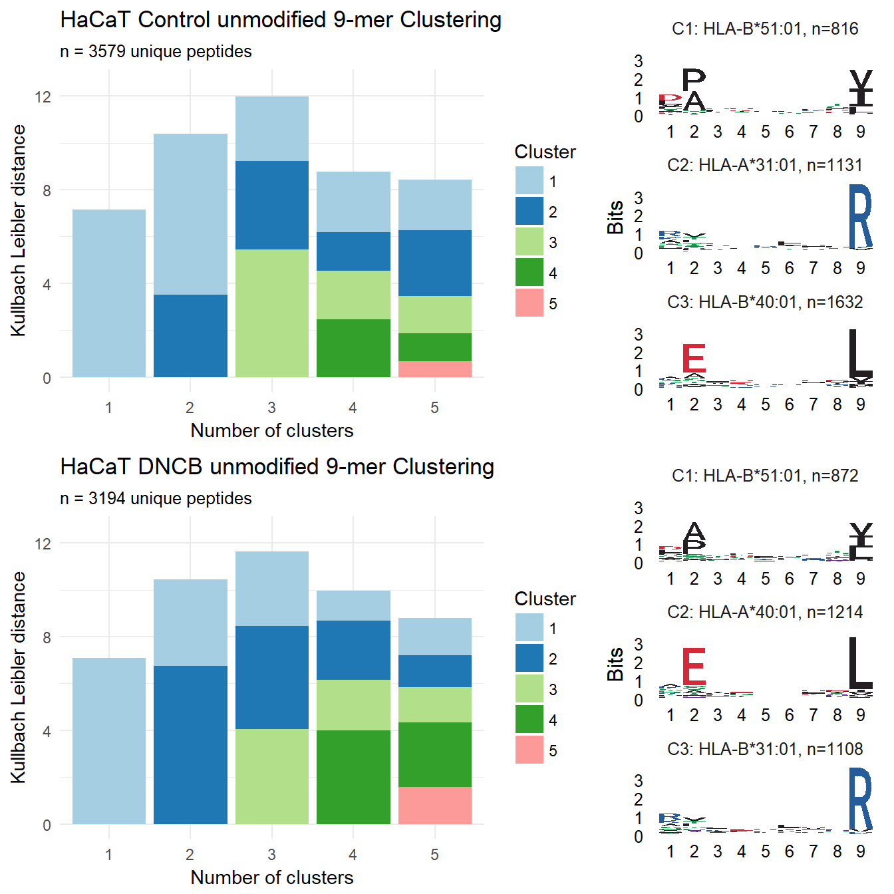

Summary
1
Introduction
2
Methods
2.1
Cell culture
2.2
Immunoaffinity purification and HPLC fractionation
2.3
Mass spectrometry
2.4
Data analysis
3
Peptidome size and proportions
3.1
Summary tables
3.2
Venn diagrams
4
Peptide logos
5
DNCB modifications
5.1
Peaks identified modifications
5.2
MS spectra confirmed modifications
5.3
Putative structures
References
Characterization of the MHC I immunopeptidome of HaCaT cells
4
Peptide logos

Figure 4.1:
Gibbs clustering of 9mer peptides